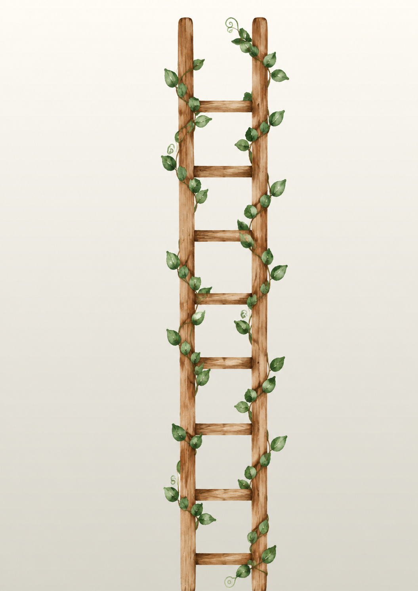
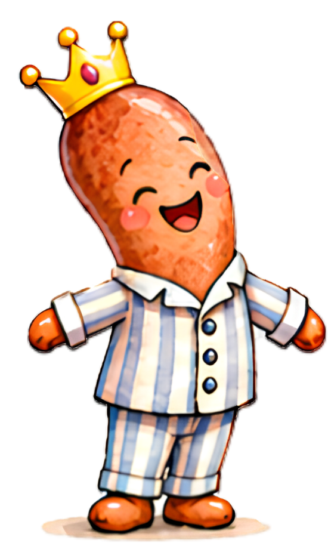
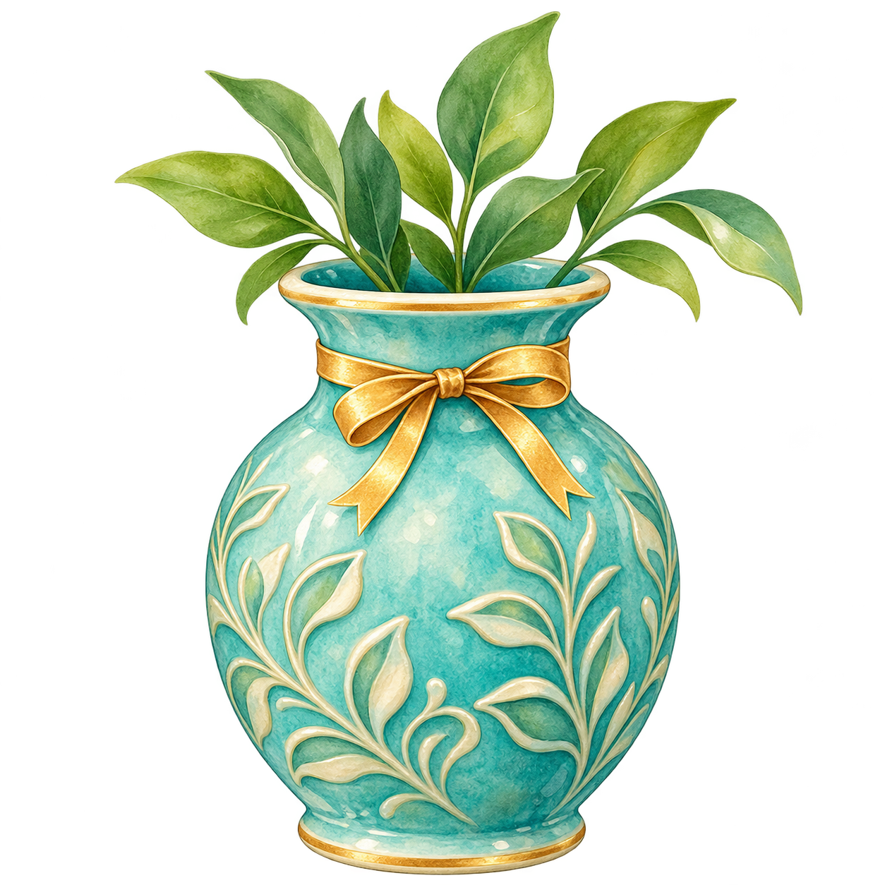

LESEDETEKTIVE
Deine Ergebnisse blühen auf
Ohne Uhr wächst dein Blumenstrauß. Bei den Zeitspielen wachsen deine Ergebnisblüten an der Leiter.



BeispielergebnisseSchriftliche Ergebnisse
| Datum | Ergebnis |
|---|
Tippe eine Blüte an, um das zugehörige Ergebnis zu sehen. Gleiche Ergebnisse teilen sich eine Blüte.